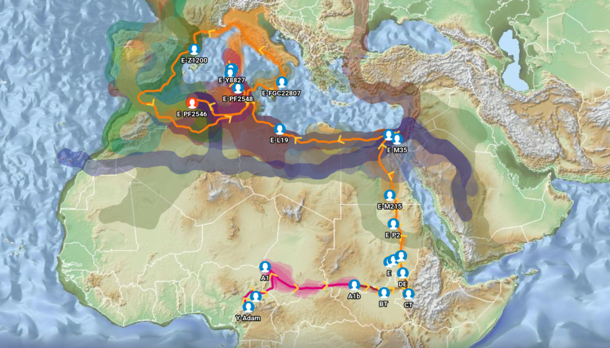

Modelling the Demographic History of Human North African Genomes Points to a Recent Soft Split Divergence Between Populations
Serradell, J. M. et al. (2024). Genome Biology, 25, 201.
Summary
This landmark population-genetics study from the Universitat Pompeu Fabra (Barcelona) employed cutting-edge artificial intelligence to reconstruct the detailed demographic history of North African genomes. The team analyzed 364 complete whole-genome sequences from Amazigh (Imazighen/Berber) and Arab populations across Morocco, Algeria, Tunisia, Libya, and Egypt.
Using two complementary AI-driven methods—Approximate Bayesian Computation with Deep Learning (ABC-DL) and a novel Genetic Programming for Population Genetics (GP4PG) algorithm—the researchers built and tested competing demographic models to determine how and when distinct North African population lineages formed. The GP4PG model provided a more robust and finely resolved fit to the data than previous approaches.
The central finding is that the genetic separation between Amazigh and Arab populations in North Africa is ancient, rooted in the Epipaleolithic period more than 20,000 years ago. This deep divergence does not reflect a simple, sudden split; instead, the model supports a “soft split” scenario of continuously decaying gene flow after an initial population divergence—rather than discrete admixture pulses. The study also confirms a back-to-Africa population movement as the origin of North African Amazigh ancestry, consistent with archaeological skeletal remains in Morocco dated to approximately 22,000 years ago.
Study Region
Key Takeaways
- Amazigh (Imazighen) and Arab populations in North Africa diverged over 20,000 years ago, during the Epipaleolithic—long before the Arab Islamic expansions of the 7th century CE
- A “soft split” model best describes North African population divergence: gradual, continuously decaying gene flow rather than discrete admixture pulses
- North African Amazigh ancestry traces to a back-to-Africa migration from Eurasia, consistent with ~22,000-year-old skeletal remains from Morocco
- Arab genetic input in North Africa is primarily recent (<1,400 years), linked to the Arab-Islamic expansion rather than ancient population movements
- The GP4PG AI algorithm outperformed standard ABC-DL methods in resolving subtle population structure in North Africa
- Continuous but declining gene flow from sub-Saharan Africa, the Middle East, and Europe shaped modern North African genomes without requiring large admixture pulses
Relevance to Our Lineage
This study provides the most rigorous genomic framework yet for situating the deep Amazigh (Berber) roots of the Aït M’Hend lineage. The confirmation that Imazighen ancestry in North Africa is autochthonous and Epipaleolithic in origin directly supports the narrative on our Lineage History page: the E-PF2546 Y-DNA haplogroup belongs to a paternal tradition that has persisted in North Africa for tens of thousands of years.
The back-to-Africa origin model aligns with the deep-time context for haplogroup E, whose ancestral branches emerged outside Africa and returned via the Sinai corridor. The soft-split divergence model also reframes how we interpret the genetic diversity seen within Amazigh populations today: rather than sudden migration shocks, long-term low-level contact with surrounding populations has gradually modulated the Amazigh genome without erasing its core autochthonous signature.
The finding that Arab genetic input into North Africa is predominantly post-7th century CE is particularly significant, as it underscores the antiquity of the Amazigh lineages documented throughout this project and validates the genetic distinctiveness of populations like the Chtouka confederation of the Souss-Massa.
Related Reading
Follow Future Summaries
For occasional updates on newly published research pages, subscribe on the contact page.
Subscribe to Updates